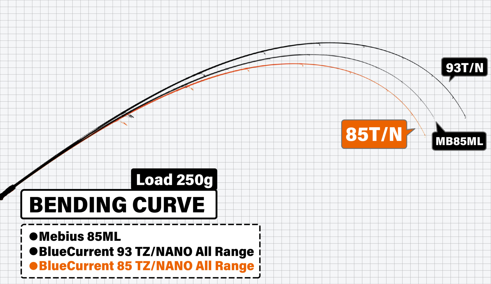

ブルーカレント85 オールレンジ
（BlueCurrent 85/TZ NANO All-Range）
ブルーカレント85 オールレンジは、ヤマガブランクスのライトゲームロッドです。通称「ブルカレ85」。
水面・中層・ボトムまで、あらゆるレンジをライトラインで攻略できる、ショアのなんでもロッド。チヌやシーバス、ハタ系のロックフィッシュ、メバル・アジ、エギングまで1本でこなし、メーカー自ら「なんでもロッド」とうたう超高感度＆パワーロッドです。

画像出典:ヤマガブランクス公式HP
スペック
- メーカー
- YAMAGA Blanks（ヤマガブランクス）
- タイプ
- スピニングロッド（ショアのライトゲーム全般）
- 全長
- 2570mm（8ft5in）
- 継数
- 2ピース（逆並継）
- 仕舞寸法
- 1315mm
- 自重
- 84g
- ルアー重量
- 3〜21g
- PEライン
- 0.4〜1号
- ガイド
- Fuji TZチタンフレームKガイド
- リールシート
- Fuji VSS16
- カーボン
- 99.7％（東レ ナノアロイテクノロジー）
- 適合リール
- ダイワ LT2000〜2500／シマノ 2000〜2500
- ターゲット
- チヌ・シーバス・ロックフィッシュ・メバル・アジ・アオリイカなど
- 価格
- 52,000円（税別）
▼今すぐチェック

ブルーカレント85 オールレンジの特徴
目指したのは、ブランク性能を極めた「なんでも」ロッド
-
1本であらゆるレンジ・ターゲットに対応
水面から中層、ボトムまで、あらゆるレンジをライトラインで攻略できる。推奨ターゲットは「なんでも」、推奨ルアーも「なんでも」、推奨フィールドは「どこでも」と公式がうたう、オールレンジ攻略モデル。
-
ナノアロイテクノロジーの感度とリフトパワー
ブランクには東レの「ナノアロイテクノロジー」を採用。ナチュラルな感度と、驚くほどのリフトパワーを両立している。
-
不意の大物にも主導権を取れる
極細のPEラインで小物から大物まで狙える「ファイナルウェポン」。ファイト中の感度もよく、不意の大物が掛かっても魚の頭の向きがすぐ分かるので、主導権を取りやすい。
同じ荷重（250g）をかけたときの曲がり方の比較です。オレンジの線が85オールレンジで、93オールレンジやメビウス85MLより深く曲がっています。

画像出典:ヤマガブランクス公式HP
ブルーカレント85 オールレンジの使い方
3〜21gのルアーとPE0.4〜1号で、トップのチヌやシーバスから、ボトムのロックフィッシュ、メバル・アジのプラグ、エギングまで使えます。
感度の高いロッドなので、ボトムを取ったときの「コツッ」という感触や、ルアーが潮を受ける重さの変化を手元で感じながら操作するのがコツ。ルアーの状態が分かると、根掛かりを減らしながら魚のいるレンジを探れます。
ヤマガブランクス公式の解説動画です。
出典：YAMAGABlanks Product CHANNEL
ブルーカレント85 オールレンジがおすすめの人
堤防や磯、河口で、その日いる魚をいろいろ狙いたい人におすすめです。
チニングにメバリング、ロックフィッシュ、ライトなエギングまで、釣り方ごとにロッドを持ち替えなくても1本で済むのがいちばんの強み。電車や徒歩での釣行で、ロッドを1本しか持っていけないときにも頼りになります。
ワンポイント
なんでもできるロッドだからこそ、ラインの太さで守備範囲を変えるのがおすすめです。メバル・アジなど軽いルアー中心の日はPE0.4号前後、チヌやロックフィッシュなど根の近くで大きな魚を狙う日は0.8〜1号と、スプールを替えるだけでロッドの性格をその日の釣りに合わせられます。
▼今すぐチェック
ブルーカレント85 オールレンジとあわせてチェックしたいアイテム
-
 ブルーカレント86 オールレンジ エリート
ヤマガブランクス
詳細はこちら＞
ブルーカレント86 オールレンジ エリート
ヤマガブランクス
詳細はこちら＞
同じオールレンジの「戦闘仕様」。シャープなブランクで、ルアーを細かく操作する攻めの釣りをしたいときに。
-
 海太郎 碧（アオイ）IUS-70LS
issei（一誠）
詳細はこちら＞
海太郎 碧（アオイ）IUS-70LS
issei（一誠）
詳細はこちら＞
こちらは「オフショアのなんでもロッド」。船からのSLJ・バチコン・イカメタルを1本で楽しみたいときに。